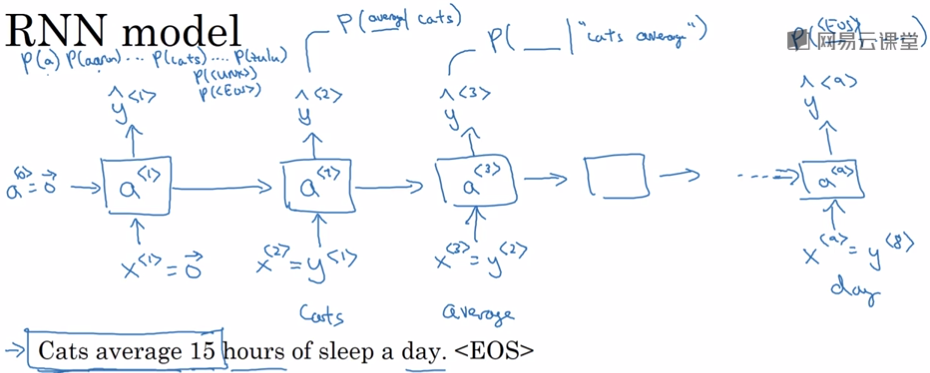
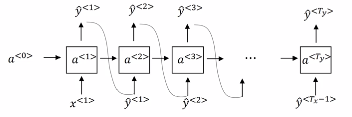

1. 什么是语言模型
S1 = "The apple and pair salad"
S2 = "The apple and pear salad"
S1和S2语音相近，为什么选择S2而不是S1？
因为语言模型。在语言模型中，P(S2) > P(S1)，因此选择S2。
语言模型用于评估一个句子发生的可能性。
2. 怎样构建语言模型
训练集：大量的语料库corpus
2.1. tokenize
即把单词序列转成token序列，token是one-hot向量。
除了每个字符有对应的token以外，增加两个token：
<EOS>：表示序列结束的字符<unk>：表示字符不在字典中
标点不用转成token
2.2. 定义模型结构

2.3. 定义损失函数
图像中第t个unit用于计算给出t-1个单词的情况下，第t个单词是某个单词的概率。
把前t个unit的结果相乘表示t个单词组成一句话的概率。
3. 新序列采样
目的：训练了一个语言模型之后，想了解模型学到了什么
3.1. softmax采样
由softmat生成每个单词的概率分布。
用np.random.choice基于概率分布进行采样。

这里和训练的主要区别是：使用还是y作为下一个t的输入。
4. 字符级别的RNN
上面都是单词级别的RNN。
也可以训练一个字符级别的RNN。
优点：不用担心出现未知的token
缺点：
生成的序列比较长。序列太长，前面对后面的影响就会小。
训练成本高。